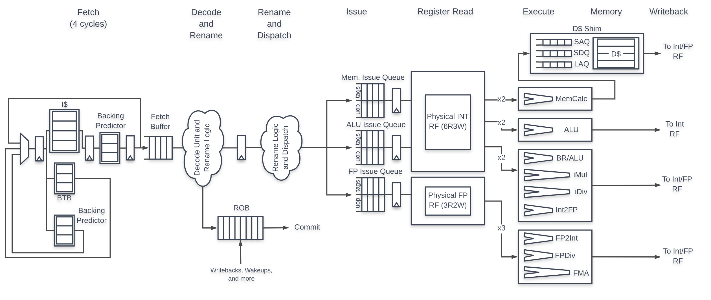
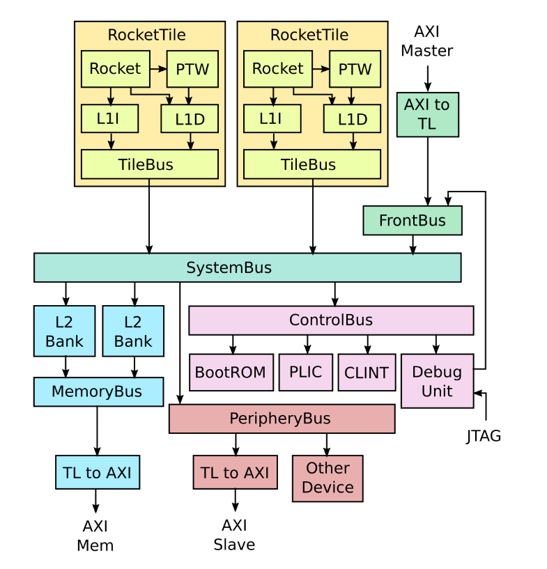
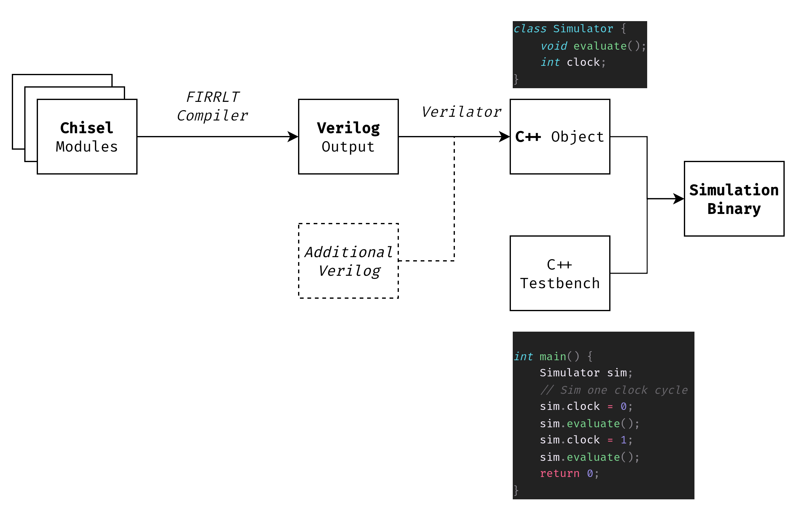

“Quick” Start
This guide is a collection of notes taken during previous projects on BOOM.
Its intended audience is Master/PhD students of VuSec that want to either (1) build a fuzzing harness (then you’re interested in the build system) or (2) implement some special kind of security feature on the core, test that it works in simulation and benchmark its overhead.
It is not intended to give a complete background on hardware design, Chisel, Verilog or physical implementation (maybe we’ll get there at some point).
BOOM Documentation
BOOM is an open-source core with an out-of-order pipeline and speculation mechanisms developed at Berkeley. It’s written in Chisel.
Useful links:
Source code: https://github.com/riscv-boom/riscv-boom
In particular, the Chisel code is here: https://github.com/riscv-boom/riscv-boom/tree/master/src/main/scala
Pipeline documentation: https://docs.boom-core.org/en/latest/sections/intro-overview/boom-pipeline.html

Hardware components overview (Taken from RocketChip, but basically you can swap “Rocket” with “BOOM”).
“TileLink” (TL) is the internal, high-speed bus to interconnect cores (“tiles”)
“AXI” (Advanced Crossbar Interface or something like that) are external buses, e.g. where peripherals and DRAM are connected

Chipyard: BOOM’s build system
A CPU is much more than just the core – think CSRs, peripherals, bus interfaces to memory, a Boot ROM, a debug interface, and many other components.
To orchestrate these systems in a modular way, Berkeley chips use Chipyard: https://chipyard.readthedocs.io/.
Quickstart
Something like this should work out-of-the box:
# Download the template and setup environment
git clone https://github.com/ucb-bar/chipyard.git
cd chipyard
./scripts/init-submodules-no-riscv-tools.sh
# build the sofware toolchain
./scripts/build-toolchains.sh riscv-tools
# add RISCV to env, update PATH and LD_LIBRARY_PATH env vars
# note: env.sh generated by build-toolchains.sh
source env.sh
# generate a simulation for LargeBOOMConfig
cd sims/verilator
make CONFIG=LargeBoomConfig
If this ends without errors, the sims/verilator folder should now contain:
a
generated-srcfolder that containsverilog sources, generated from Chisel
C++ sources, generated by Verilator
new binary called something like
simulator-chipyard.harness-LargeBoomConfigthat runs a cycle-accurate simulation of the selected config (more on how to run here)
Available Components
This page describes all components available in Chipyard: https://chipyard.readthedocs.io/en/latest/Chipyard-Basics/Chipyard-Components.html
It’s not important to understand all of them for now – you can use this list later when you dig into the code. The relevant ones for us are:
Hardware
BOOM: the core we’re usingRocket Chip: an older, in-order core. Its codebase contains stuff that was later reused for BOOM, e.g. L1 Cachestestchipip: contains system components (e.g. UART, SPI, JTAG, I2C, PWM) and testing infrarocket-chip generators: other shared components (e.g. caches)
Software
riscv-tools: bunch of utils, most interestinglyRISCV Compiler & Assembler, now mostly mainline in GCC/LLVM
bootloader & proxy kernel, used to run bare-metal programs without booting up a full Linux Kernel
ISA simulator (Spike), a software implementation of what each instruction should do
verilatora cycle-accurate simulator that “runs” your hardware completely in software (more about this later)
What does it mean to “build” a hardware project?
This section tries to describe what happens under the hood when you run
cd sims/verilator
make CONFIG=LargeBoomV3Config
Modern hardware is typically developed writing code. There are particular programming languages for this, called HDLs (hardware description languages):
VHDL, Verilog and SystemVerilog are considered “low-level” HDLs (~like C for programming)
Chisel is considered a higher-level HDL (~like Java)
Chipyard’s workflow looks something like this:
Hardware components are written in Chisel
configfragments define which components to use in a given design and how to connect them togetherThe “top” component (called
DigitalTopin Chipyard) is like a “main” function in C
Chisel is transpiled to Verilog via the FIRRTL compiler
FYI: You can actually have some components written in “raw” Verilog (Verilog Black-Boxing https://chipyard.readthedocs.io/en/latest/Customization/Incorporating-Verilog-Blocks.html)
FYI: In Verilog itself, you can also have modules that are defined in Verilog but implemented in C (something similar to
extern Cin C++). This mechanism is calledDPI-C, and of course only works in software simulations.
Once you have the Verilog source, you can either:
synthesize to an FPGA
This generates a bitstream that you need to flash on your FPGA
Note that this is several orders of magnitude faster than software simulation
build a software simulation using Verilator (a process called “Verilation”)
Testing with Verilator
Verilator basically transforms your Verilog code into a C++ object where each member represents a wire in the design (more or less) and a public eval() function is exposed to drive the simulation with the current inputs.
This requires also to write a software component with a main() function (called a “simulation driver” or a “testbench”) that drives the simulation, i.e. literally sets the clock to 1, calls eval(), sets the clock to 0 and calls eval() again.
Once you have (1) you simulation driver and (2) the verilated C++ code, Verilator can compile everything into a binary that you can run on your machine – no additional hardware needed!

Running a RISC-V Program on Verilator
The Chipyard docs contain a quick guide on:
How to run the default example https://chipyard.readthedocs.io/en/latest/Simulation/Software-RTL-Simulation.html#simulating-the-default-example
./simulator-chipyard.harness-LargeBoomV3Config $RISCV/riscv64-unknown-elf/share/riscv-tests/isa/rv64ui-p-simple
How to run a custom test program https://chipyard.readthedocs.io/en/latest/Simulation/Software-RTL-Simulation.html#custom-benchmarks-tests
# Enter Tests directory cd tests make # Enter Verilator or VCS directory cd ../sims/verilator make run-binary BINARY=../../tests/hello.riscv
When using verilator you can use this to skip quite a lot of useless cycles https://chipyard.readthedocs.io/en/latest/Simulation/Software-RTL-Simulation.html#fast-memory-loading
make run-binary BINARY=test.riscv LOADMEM=1
More info on how these programs are built in a way that “just works” for the simulator https://chipyard.readthedocs.io/en/latest/Software/Baremetal.html
Basically programs are compiled with the libgloss-htif library that enables writing programs with simple syscalls (like
printf) and running them without the need of a fully booted OS
More info on what happens under the hood can be found in the corresponding deep dive of this guide.
Testing on FPGA
// TODO
Deep Dives
You can check the “deep dive” documents for more info on specific parts:
Build System Deep Dive describes in detail what happens on
make CONFIG=LargeBoomConfigand when you run a binaryDesign Deep Dive contains a collection of notes of various parts of the BOOM design